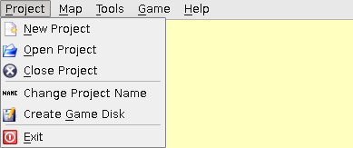

[User Interfaces]->[Main Window]->[Menu Bar]->[Project]

- New Project:
- Opens a dialog asking for the project name, directory name, and projects location.
- Open Project:
- Opens a dialog to select a project to open from a chosen projects directory.
- Close Project:
- Closes the currently open project. If changes have been made since the last save a dialog will ask if you want to save those changes.
- Change Project Name:
- Opens a dialog to change the name of the current project.
- Create Game Disk:
- Bundles all of the project data with the engine for use outside of Open RPG Maker.
- Exit:
- Exits Open RPG Maker. If a project is open and has unsaved changes a dialog will ask if you want to save those changes.